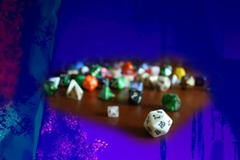

Dungeons and Dragon's Dice
DnD Dice takes the concept of the six sided dice and add's many more variants, even up to a 100 sided dice. People refer to them by d for dice and the number of sides it has. For example, the six sided die is known as a d6. Generally, people use 6 different die's for DnD. They are; d4, d6, d8, d10, d12, and d20. The d20 is the most popular out of the six die, being used for 90% of the game. Two d10's are known as percentile die. This is used when you don't want to buy a 100 sided die. You roll two die, one of them represents the 10's digit and the other represent's the 1's digit. Do I need more dice? probably not. I have around 15 pairs of dice, 7 dice a pair. that's over 100 separate dice. Am I going to get more in the future? Aboslutely.